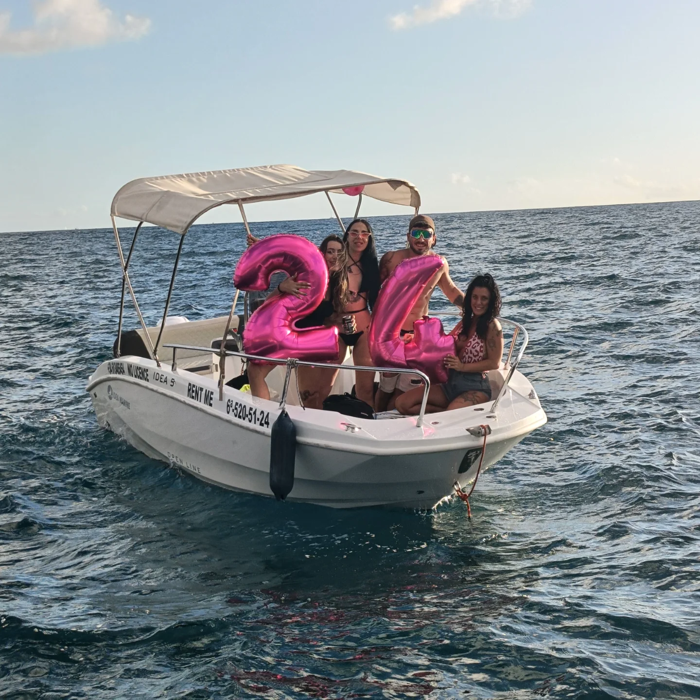

Vuoi essere tu al timone? Con il barco sin licencia non serve la patente nautica: dopo un breve briefing puoi prendere il mare in autonomia con i tuoi amici, scegliere dove fermarti, fare il bagno dove ti pare.
Le imbarcazioni sono progettate per la navigazione in zone protette e arrivano con tutto l'equipaggiamento di sicurezza. Limite di velocità e di distanza dalla costa rispettati per legge — più che sufficienti per una giornata da sogno tra cale e spiagge nascoste.
Da 50€ / ora · fino a 6 pax
Facile da guidare, perfetto per famiglie, coppie o amici che vogliono godersi il mare in autonomia, senza patente nautica. Ideale per giri costieri, soste snorkel e relax.
Incluso: carburante, musica Bluetooth, 1 bevanda a persona, maschera da snorkel. Cauzione 100€ · documento d'identità obbligatorio.
Da 80€ / ora · fino a 6 pax
Per chi ha la patente nautica e vuole più potenza, più autonomia e un raggio di navigazione maggiore. Perfetto per un'esperienza più dinamica e per esplorare tratti più ampi di costa.
Incluso: musica Bluetooth, 1 bevanda a persona, maschera da snorkel. Cauzione 200€ · carburante non incluso.
Dimmi data, quante persone e durata. Ti dico se c'è posto.
💬 Contattaci su WhatsApp